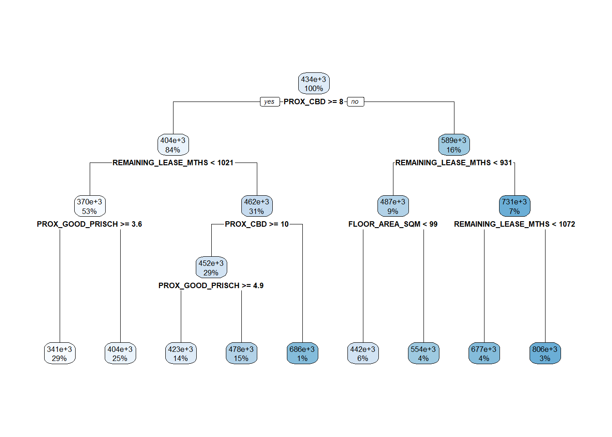

Reveal Code
pacman::p_load(sf, spdep, GWmodel, SpatialML, tmap, rsample, tidymodels, tidyverse, gtsummary, rpart, rpart.plot, ggstatsplot, performance, ranger, yardstick)Yung Qi Yang
March 18, 2024
Simple feature collection with 15901 features and 17 fields
Geometry type: POINT
Dimension: XY
Bounding box: xmin: 11597.31 ymin: 28217.39 xmax: 42623.63 ymax: 48741.06
Projected CRS: SVY21 / Singapore TM
# A tibble: 15,901 × 18
RESALE_PRICE FLOOR_AREA_SQM STOREY_ORDER REMAINING_LEASE_MTHS PROX_CBD
<dbl> <dbl> <int> <dbl> <dbl>
1 330000 92 1 684 8.82
2 360000 91 3 738 9.84
3 370000 92 1 733 9.56
4 375000 99 2 700 9.61
5 380000 92 2 715 8.35
6 380000 92 4 732 9.49
7 385000 92 3 706 8.96
8 395000 92 2 745 9.81
9 395000 93 4 731 10.3
10 395000 91 3 725 10.4
# ℹ 15,891 more rows
# ℹ 13 more variables: PROX_ELDERLYCARE <dbl>, PROX_HAWKER <dbl>,
# PROX_MRT <dbl>, PROX_PARK <dbl>, PROX_GOOD_PRISCH <dbl>, PROX_MALL <dbl>,
# PROX_CHAS <dbl>, PROX_SUPERMARKET <dbl>, WITHIN_350M_KINDERGARTEN <int>,
# WITHIN_350M_CHILDCARE <int>, WITHIN_350M_BUS <int>,
# WITHIN_1KM_PRISCH <int>, geometry <POINT [m]>rs_mlr <- lm(RESALE_PRICE ~ FLOOR_AREA_SQM +
STOREY_ORDER + REMAINING_LEASE_MTHS +
PROX_CBD + PROX_ELDERLYCARE + + PROX_CHAS + PROX_HAWKER +
PROX_MRT + PROX_PARK + PROX_GOOD_PRISCH + PROX_MALL +
PROX_SUPERMARKET + WITHIN_350M_KINDERGARTEN +
WITHIN_350M_CHILDCARE + WITHIN_350M_BUS +
WITHIN_1KM_PRISCH,
data= train_df)
tbl_regression(rs_mlr, intercept = TRUE)| Characteristic | Beta | 95% CI1 | p-value |
|---|---|---|---|
| (Intercept) | 105,360 | 81,898, 128,823 | <0.001 |
| FLOOR_AREA_SQM | 2,803 | 2,601, 3,005 | <0.001 |
| STOREY_ORDER | 14,044 | 13,292, 14,796 | <0.001 |
| REMAINING_LEASE_MTHS | 345 | 335, 355 | <0.001 |
| PROX_CBD | -17,918 | -18,434, -17,403 | <0.001 |
| PROX_ELDERLYCARE | -14,469 | -16,672, -12,265 | <0.001 |
| PROX_CHAS | -9,057 | -23,168, 5,054 | 0.2 |
| PROX_HAWKER | -17,101 | -19,961, -14,240 | <0.001 |
| PROX_MRT | -31,603 | -35,448, -27,758 | <0.001 |
| PROX_PARK | -9,334 | -12,677, -5,992 | <0.001 |
| PROX_GOOD_PRISCH | 2,787 | 2,036, 3,539 | <0.001 |
| PROX_MALL | -12,320 | -16,777, -7,863 | <0.001 |
| PROX_SUPERMARKET | -25,758 | -35,671, -15,845 | <0.001 |
| WITHIN_350M_KINDERGARTEN | 8,707 | 7,297, 10,117 | <0.001 |
| WITHIN_350M_CHILDCARE | -4,537 | -5,317, -3,756 | <0.001 |
| WITHIN_350M_BUS | 1,067 | 573, 1,562 | <0.001 |
| WITHIN_1KM_PRISCH | -8,192 | -9,277, -7,108 | <0.001 |
| 1 CI = Confidence Interval | |||
rs_mlr <- lm(RESALE_PRICE ~ FLOOR_AREA_SQM +
STOREY_ORDER + REMAINING_LEASE_MTHS +
PROX_CBD + PROX_ELDERLYCARE + PROX_HAWKER +
PROX_MRT + PROX_PARK + PROX_GOOD_PRISCH + PROX_MALL +
PROX_SUPERMARKET + WITHIN_350M_KINDERGARTEN +
WITHIN_350M_CHILDCARE + WITHIN_350M_BUS +
WITHIN_1KM_PRISCH,
data= train_df)
tbl_regression(rs_mlr, intercept = TRUE)| Characteristic | Beta | 95% CI1 | p-value |
|---|---|---|---|
| (Intercept) | 105,081 | 81,622, 128,540 | <0.001 |
| FLOOR_AREA_SQM | 2,791 | 2,589, 2,992 | <0.001 |
| STOREY_ORDER | 14,038 | 13,286, 14,789 | <0.001 |
| REMAINING_LEASE_MTHS | 346 | 335, 356 | <0.001 |
| PROX_CBD | -17,907 | -18,422, -17,392 | <0.001 |
| PROX_ELDERLYCARE | -14,588 | -16,783, -12,392 | <0.001 |
| PROX_HAWKER | -17,434 | -20,247, -14,621 | <0.001 |
| PROX_MRT | -31,752 | -35,590, -27,914 | <0.001 |
| PROX_PARK | -9,366 | -12,708, -6,023 | <0.001 |
| PROX_GOOD_PRISCH | 2,758 | 2,008, 3,508 | <0.001 |
| PROX_MALL | -12,220 | -16,674, -7,765 | <0.001 |
| PROX_SUPERMARKET | -28,049 | -37,298, -18,800 | <0.001 |
| WITHIN_350M_KINDERGARTEN | 8,722 | 7,312, 10,131 | <0.001 |
| WITHIN_350M_CHILDCARE | -4,515 | -5,295, -3,735 | <0.001 |
| WITHIN_350M_BUS | 1,084 | 590, 1,578 | <0.001 |
| WITHIN_1KM_PRISCH | -8,201 | -9,285, -7,117 | <0.001 |
| 1 CI = Confidence Interval | |||
class : SpatialPointsDataFrame
features : 7950
extent : 11597.31, 42623.63, 28217.39, 48741.06 (xmin, xmax, ymin, ymax)
crs : +proj=tmerc +lat_0=1.36666666666667 +lon_0=103.833333333333 +k=1 +x_0=28001.642 +y_0=38744.572 +ellps=WGS84 +towgs84=0,0,0,0,0,0,0 +units=m +no_defs
variables : 16
names : RESALE_PRICE, FLOOR_AREA_SQM, STOREY_ORDER, REMAINING_LEASE_MTHS, PROX_CBD, PROX_ELDERLYCARE, PROX_HAWKER, PROX_MRT, PROX_PARK, PROX_GOOD_PRISCH, PROX_MALL, PROX_SUPERMARKET, WITHIN_350M_KINDERGARTEN, WITHIN_350M_CHILDCARE, WITHIN_350M_BUS, ...
min values : 218000, 74, 1, 555, 0.999393538715878, 1.98943787433087e-08, 0.0333358643817954, 0.0220407324774434, 0.0441643212802781, 0.0652540365486641, 0, 1.21715176356525e-07, 0, 0, 0, ...
max values : 1186888, 126, 17, 1164, 19.6500691667807, 3.30163731686804, 2.80329916478192, 2.13060636038504, 2.41313695915468, 10.6223726149914, 2.26056404492346, 1.57131703651196, 7, 20, 18, ... set.seed(1234)
rs_rp <- rpart(RESALE_PRICE ~ FLOOR_AREA_SQM +
STOREY_ORDER + REMAINING_LEASE_MTHS +
PROX_CBD + PROX_ELDERLYCARE + PROX_HAWKER +
PROX_MRT + PROX_PARK + PROX_GOOD_PRISCH + PROX_MALL +
PROX_SUPERMARKET + WITHIN_350M_KINDERGARTEN +
WITHIN_350M_CHILDCARE + WITHIN_350M_BUS +
WITHIN_1KM_PRISCH,
data= train_df)
summary(rs_rp)Call:
rpart(formula = RESALE_PRICE ~ FLOOR_AREA_SQM + STOREY_ORDER +
REMAINING_LEASE_MTHS + PROX_CBD + PROX_ELDERLYCARE + PROX_HAWKER +
PROX_MRT + PROX_PARK + PROX_GOOD_PRISCH + PROX_MALL + PROX_SUPERMARKET +
WITHIN_350M_KINDERGARTEN + WITHIN_350M_CHILDCARE + WITHIN_350M_BUS +
WITHIN_1KM_PRISCH, data = train_df)
n= 7950
CP nsplit rel error xerror xstd
1 0.32500941 0 1.0000000 1.0002539 0.025701129
2 0.16349282 1 0.6749906 0.6761234 0.015346142
3 0.11420780 2 0.5114978 0.5130256 0.011770166
4 0.04879110 3 0.3972900 0.3994993 0.009975080
5 0.03719356 4 0.3484989 0.3506805 0.008518421
6 0.01957252 5 0.3113053 0.3138078 0.007935502
7 0.01915689 6 0.2917328 0.3030715 0.007575178
8 0.01518741 7 0.2725759 0.2796309 0.006735732
9 0.01000000 8 0.2573885 0.2615752 0.006391225
Variable importance
PROX_CBD REMAINING_LEASE_MTHS STOREY_ORDER
37 29 8
PROX_GOOD_PRISCH FLOOR_AREA_SQM PROX_ELDERLYCARE
7 6 4
PROX_HAWKER PROX_MRT PROX_MALL
3 2 1
PROX_PARK PROX_SUPERMARKET WITHIN_1KM_PRISCH
1 1 1
Node number 1: 7950 observations, complexity param=0.3250094
mean=433705.6, MSE=1.433391e+10
left son=2 (6665 obs) right son=3 (1285 obs)
Primary splits:
PROX_CBD < 7.974483 to the right, improve=0.32500940, (0 missing)
REMAINING_LEASE_MTHS < 1012.5 to the left, improve=0.18157150, (0 missing)
STOREY_ORDER < 6.5 to the left, improve=0.15939740, (0 missing)
PROX_GOOD_PRISCH < 6.275294 to the right, improve=0.11855990, (0 missing)
WITHIN_1KM_PRISCH < 1.5 to the right, improve=0.08396717, (0 missing)
Surrogate splits:
REMAINING_LEASE_MTHS < 671.5 to the right, agree=0.855, adj=0.104, (0 split)
FLOOR_AREA_SQM < 82.5 to the right, agree=0.847, adj=0.054, (0 split)
STOREY_ORDER < 8.5 to the left, agree=0.846, adj=0.047, (0 split)
PROX_HAWKER < 0.0911829 to the right, agree=0.841, adj=0.016, (0 split)
PROX_ELDERLYCARE < 4.400731e-07 to the right, agree=0.839, adj=0.004, (0 split)
Node number 2: 6665 observations, complexity param=0.1142078
mean=403736, MSE=6.709894e+09
left son=4 (4228 obs) right son=5 (2437 obs)
Primary splits:
REMAINING_LEASE_MTHS < 1020.5 to the left, improve=0.29101270, (0 missing)
PROX_CBD < 15.51902 to the right, improve=0.16270340, (0 missing)
PROX_GOOD_PRISCH < 5.170014 to the right, improve=0.15135740, (0 missing)
STOREY_ORDER < 4.5 to the left, improve=0.09349039, (0 missing)
PROX_MRT < 0.4634405 to the right, improve=0.05389703, (0 missing)
Surrogate splits:
FLOOR_AREA_SQM < 97.5 to the right, agree=0.709, adj=0.204, (0 split)
STOREY_ORDER < 4.5 to the left, agree=0.690, adj=0.151, (0 split)
PROX_MRT < 0.2913116 to the right, agree=0.687, adj=0.143, (0 split)
PROX_SUPERMARKET < 0.1507347 to the right, agree=0.666, adj=0.086, (0 split)
PROX_ELDERLYCARE < 0.1368842 to the right, agree=0.665, adj=0.085, (0 split)
Node number 3: 1285 observations, complexity param=0.1634928
mean=589151.4, MSE=2.505591e+10
left son=6 (745 obs) right son=7 (540 obs)
Primary splits:
REMAINING_LEASE_MTHS < 930.5 to the left, improve=0.5786517, (0 missing)
STOREY_ORDER < 4.5 to the left, improve=0.2907640, (0 missing)
FLOOR_AREA_SQM < 84.5 to the left, improve=0.1337876, (0 missing)
PROX_CBD < 2.611464 to the right, improve=0.1315658, (0 missing)
PROX_ELDERLYCARE < 0.4011503 to the right, improve=0.1273309, (0 missing)
Surrogate splits:
STOREY_ORDER < 4.5 to the left, agree=0.736, adj=0.372, (0 split)
PROX_ELDERLYCARE < 0.3277588 to the right, agree=0.675, adj=0.226, (0 split)
PROX_CBD < 5.467038 to the right, agree=0.671, adj=0.217, (0 split)
PROX_GOOD_PRISCH < 4.338693 to the left, agree=0.665, adj=0.202, (0 split)
PROX_HAWKER < 0.2474588 to the right, agree=0.643, adj=0.150, (0 split)
Node number 4: 4228 observations, complexity param=0.03719356
mean=370187.4, MSE=3.720671e+09
left son=8 (2271 obs) right son=9 (1957 obs)
Primary splits:
PROX_GOOD_PRISCH < 3.629405 to the right, improve=0.26942840, (0 missing)
PROX_CBD < 14.48068 to the right, improve=0.21093420, (0 missing)
FLOOR_AREA_SQM < 88.5 to the left, improve=0.07192738, (0 missing)
STOREY_ORDER < 2.5 to the left, improve=0.04154147, (0 missing)
PROX_PARK < 1.28633 to the right, improve=0.03614683, (0 missing)
Surrogate splits:
PROX_CBD < 13.69747 to the right, agree=0.899, adj=0.781, (0 split)
REMAINING_LEASE_MTHS < 773.5 to the right, agree=0.661, adj=0.268, (0 split)
PROX_MALL < 0.6440848 to the left, agree=0.624, adj=0.188, (0 split)
WITHIN_1KM_PRISCH < 2.5 to the right, agree=0.620, adj=0.178, (0 split)
PROX_PARK < 0.6904412 to the right, agree=0.617, adj=0.172, (0 split)
Node number 5: 2437 observations, complexity param=0.0487911
mean=461940.1, MSE=6.555576e+09
left son=10 (2331 obs) right son=11 (106 obs)
Primary splits:
PROX_CBD < 10.40657 to the right, improve=0.34802160, (0 missing)
PROX_GOOD_PRISCH < 1.720127 to the right, improve=0.23516470, (0 missing)
FLOOR_AREA_SQM < 88.5 to the right, improve=0.15243800, (0 missing)
WITHIN_1KM_PRISCH < 2.5 to the right, improve=0.09564776, (0 missing)
PROX_MRT < 0.8792713 to the right, improve=0.08931852, (0 missing)
Surrogate splits:
PROX_MALL < 1.379339 to the left, agree=0.962, adj=0.132, (0 split)
FLOOR_AREA_SQM < 82.5 to the right, agree=0.961, adj=0.113, (0 split)
STOREY_ORDER < 9.5 to the left, agree=0.958, adj=0.038, (0 split)
Node number 6: 745 observations, complexity param=0.01957252
mean=486637.6, MSE=8.877e+09
left son=12 (451 obs) right son=13 (294 obs)
Primary splits:
FLOOR_AREA_SQM < 98.5 to the left, improve=0.33725330, (0 missing)
REMAINING_LEASE_MTHS < 811 to the left, improve=0.26213800, (0 missing)
PROX_MALL < 0.5895061 to the right, improve=0.11363750, (0 missing)
PROX_MRT < 0.4164698 to the right, improve=0.10371830, (0 missing)
PROX_PARK < 1.087101 to the right, improve=0.07509714, (0 missing)
Surrogate splits:
REMAINING_LEASE_MTHS < 811 to the left, agree=0.831, adj=0.571, (0 split)
PROX_CBD < 7.58295 to the left, agree=0.655, adj=0.126, (0 split)
WITHIN_350M_KINDERGARTEN < 2.5 to the left, agree=0.652, adj=0.119, (0 split)
PROX_MRT < 0.7860161 to the left, agree=0.631, adj=0.065, (0 split)
PROX_GOOD_PRISCH < 0.8867187 to the right, agree=0.631, adj=0.065, (0 split)
Node number 7: 540 observations, complexity param=0.01915689
mean=730582.5, MSE=1.287541e+10
left son=14 (314 obs) right son=15 (226 obs)
Primary splits:
REMAINING_LEASE_MTHS < 1071.5 to the left, improve=0.3139801, (0 missing)
PROX_CBD < 1.867495 to the right, improve=0.2790647, (0 missing)
STOREY_ORDER < 6.5 to the left, improve=0.2548839, (0 missing)
PROX_GOOD_PRISCH < 5.8053 to the left, improve=0.2198813, (0 missing)
PROX_MRT < 0.9143085 to the right, improve=0.1396864, (0 missing)
Surrogate splits:
PROX_MRT < 0.4309243 to the left, agree=0.706, adj=0.296, (0 split)
PROX_CBD < 5.37813 to the left, agree=0.674, adj=0.221, (0 split)
FLOOR_AREA_SQM < 90.5 to the left, agree=0.657, adj=0.181, (0 split)
PROX_HAWKER < 0.7592249 to the left, agree=0.654, adj=0.173, (0 split)
PROX_GOOD_PRISCH < 2.077614 to the right, agree=0.648, adj=0.159, (0 split)
Node number 8: 2271 observations
mean=340796.1, MSE=1.695791e+09
Node number 9: 1957 observations
mean=404294.6, MSE=3.904691e+09
Node number 10: 2331 observations, complexity param=0.01518741
mean=451754.4, MSE=4.18821e+09
left son=20 (1123 obs) right son=21 (1208 obs)
Primary splits:
PROX_GOOD_PRISCH < 4.866983 to the right, improve=0.17727390, (0 missing)
PROX_CBD < 14.20377 to the right, improve=0.13745020, (0 missing)
PROX_MRT < 0.7440342 to the right, improve=0.11174670, (0 missing)
STOREY_ORDER < 2.5 to the left, improve=0.08750032, (0 missing)
PROX_PARK < 1.455561 to the right, improve=0.07592602, (0 missing)
Surrogate splits:
PROX_CBD < 14.09321 to the right, agree=0.952, adj=0.900, (0 split)
PROX_MRT < 0.6720027 to the right, agree=0.749, adj=0.479, (0 split)
PROX_PARK < 1.441633 to the right, agree=0.635, adj=0.243, (0 split)
PROX_HAWKER < 0.4913393 to the right, agree=0.625, adj=0.221, (0 split)
PROX_ELDERLYCARE < 1.379679 to the right, agree=0.614, adj=0.199, (0 split)
Node number 11: 106 observations
mean=685929.1, MSE=6.162736e+09
Node number 12: 451 observations
mean=442460.5, MSE=5.424694e+09
Node number 13: 294 observations
mean=554405.7, MSE=6.58656e+09
Node number 14: 314 observations
mean=676641.3, MSE=7.840665e+09
Node number 15: 226 observations
mean=805527.4, MSE=1.021123e+10
Node number 20: 1123 observations
mean=423493.8, MSE=2.494921e+09
Node number 21: 1208 observations
mean=478026.4, MSE=4.329674e+09 
rs_rf <- ranger(RESALE_PRICE ~ FLOOR_AREA_SQM +
STOREY_ORDER + REMAINING_LEASE_MTHS +
PROX_CBD + PROX_ELDERLYCARE + PROX_HAWKER +
PROX_MRT + PROX_PARK + PROX_GOOD_PRISCH + PROX_MALL +
PROX_SUPERMARKET + WITHIN_350M_KINDERGARTEN +
WITHIN_350M_CHILDCARE + WITHIN_350M_BUS +
WITHIN_1KM_PRISCH,
data= train_df,
importance ="impurity")
rs_rfRanger result
Call:
ranger(RESALE_PRICE ~ FLOOR_AREA_SQM + STOREY_ORDER + REMAINING_LEASE_MTHS + PROX_CBD + PROX_ELDERLYCARE + PROX_HAWKER + PROX_MRT + PROX_PARK + PROX_GOOD_PRISCH + PROX_MALL + PROX_SUPERMARKET + WITHIN_350M_KINDERGARTEN + WITHIN_350M_CHILDCARE + WITHIN_350M_BUS + WITHIN_1KM_PRISCH, data = train_df, importance = "impurity")
Type: Regression
Number of trees: 500
Sample size: 7950
Number of independent variables: 15
Mtry: 3
Target node size: 5
Variable importance mode: impurity
Splitrule: variance
OOB prediction error (MSE): 741935472
R squared (OOB): 0.9482457 rs_gwrf <- grf(formula = RESALE_PRICE ~ FLOOR_AREA_SQM +
STOREY_ORDER + REMAINING_LEASE_MTHS +
PROX_CBD + PROX_ELDERLYCARE + PROX_HAWKER +
PROX_MRT + PROX_PARK + PROX_GOOD_PRISCH + PROX_MALL +
PROX_SUPERMARKET + WITHIN_350M_KINDERGARTEN +
WITHIN_350M_CHILDCARE + WITHIN_350M_BUS +
WITHIN_1KM_PRISCH,
dframe = train_df,
bw = 55,
kernel = "adaptive",
coords = coords_train,
geo.weighted = TRUE)
write_rds(rs_gwrf, "Data/Models/rs_gwrf.rds")# A tibble: 3 × 4
models .metric .estimator .estimate
<chr> <chr> <chr> <dbl>
1 gwrf_pred rmse standard 28745.
2 mlr_pred rmse standard 61617.
3 rf_pred rmse standard 28388.